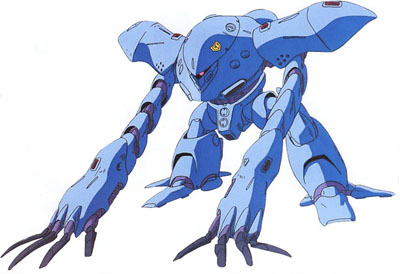

| MSM-03C Hygogg Heavy Assault Amphibious Zeon Duchy Mobile Suit |
|
|  | |
General and Technical Data |
|
|
Model number: MSM-03C Code name: Hygogg Unit type: heavy assault amphibious mobile suit Operator: Zeon Duchy Dimensions: head height 15.4 meters Weight: empty 54.5 metric tons; max gross 79.2 metric tons Construction: titanium/ceramic composite Powerplant: Minovsky type ultracompact fusion reactor, output rated at 2735 kW Propulsion: rocket/hydrojet thrusters: 2 x 38000 kg, 1 x 10000 kg; optional hydrojet booster packs: 2 Performance: maximum thruster acceleration 1.09 G; maximum water speed 89 knots Equipment and design features: sensors, range Fixed armaments: 2x mega particle gun, mounted in main body; 4x missile launcher, 1 round each, mounted in main body Optional fixed armaments: 2x large torpedo or rocket, stored in safety containers over each arm Magnetic Storage Racks: 0 |
|
| Technical and Historical Notes | |
|
Developed in conjunction with the high-performance Zugock-E, the MSM-03C Hygogg is an attempt by Zimmad to continue their partnership with MIP as the premier Marine Mobile Suit manufacturers for the Zeon armed forces.
The Hygogg is a drastic improvement over the original Gogg design. Gone is the huge, portly body and stomach-mounted cannons; instead, these have all be replaced by newer, more modern components. The Gogg's gigantic torso, originally intended to help provide protection against crushing deep-water depths, has been scaled down into something more resembling a traditional mobile suit. In doing this, it is now capable of waist rotation, giving it extra firing arcs. The Gogg's nearly square and blocky legs have also been scaled down into slimmer, more maneuverable versions, equipped with large "toe" fins for extra maneuverability in water and added stability on land. Finally, the Gogg's belly-mounted weaponry has been replaced and added elsewhere on its body. For underwater cruising, the Hygogg's huge shoulders allow it to conceal its arms from water flow, greatly decreasing drag. Its segmented arms can also retract into themselves, reducing their surface area for prolonged aquatic operations. They are also extremely useful as melee weapons; each is equipped with four claws, and the segmented design allows them to be used much like the Gouf's heat rod in a bashing role. Though it is no longer capable of deep sea missions, it is much faster and more maneuverable at shallower depths, as well as on land. The water-cooled reactor has been replaced with a standard model, giving it unlimited sortie time. Finally, its weapons recieved a fierce overhaul. The Gogg's heavy mega particle cannons have been replaced with smaller, rapid-firing mega particle guns; they have also been moved from the stomach to the arms, giving them greater accuracy and better control. The large torpedo launchers, usually only useful underwater, have also been replaced with quadruple top-facing missile launchers. Finally, for heavy assaults, two gigantic torpedos or rockets are mounted inside safety containers over the ends of its arms; these can deliver a very powerful warhead against an enemy target in a matter of seconds. The recoil from the rocket firing is extremely powerful, however, and the Hygogg must remain stationary if firing accurately.
Another performance increase comes in the form of its large external booster. For missions where maximum speed are essential, the Hygogg's jumpjets are supplemented with a massive external rocket booster, capable of hurdling the mobile suit through the air at great speed. These are only capable of sustained thrust for about thirty seconds, however, are are also jettisoned after they are depleted.
|
 RPG quick stats sheet
RPG quick stats sheet | Weapons and Features | |
|


Gogg/Z'Gok Cockpit |
|